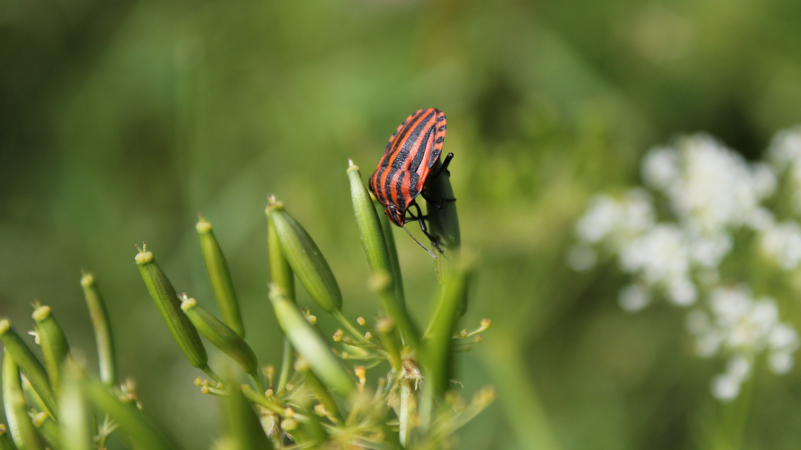
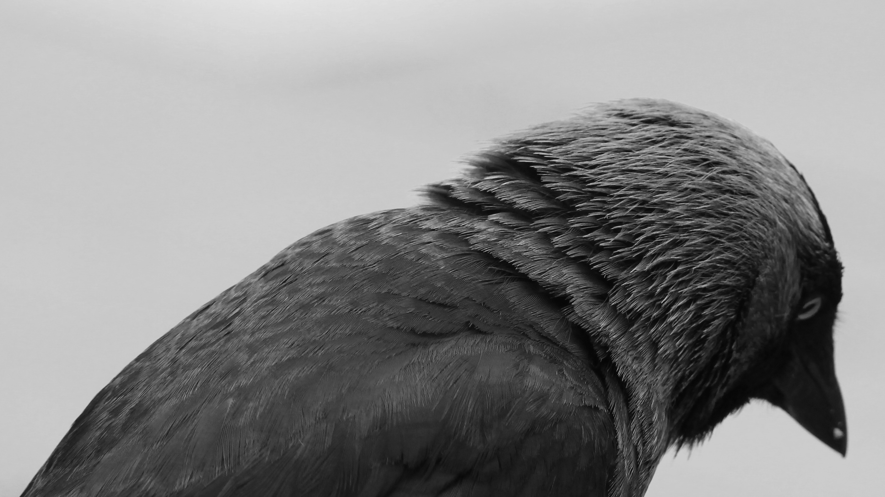

Tromp Photography
My name is Daan Tromp, I am a 22 years old young man from the Netherlands. When the weather is good, I grab my camera to capture the light, the colours and the perspectives. Those moments will inspire me for the rest of my life.
Enjoy my little works!
make your own site
Delft, the Netherlands
Canon EF-S 18-55mm f/3.5-5.6 IS II + Canon EOS 1100D
@36mm, ISO 200, f/8, 1/200 sec., flash

Delft, the Netherlands
Canon EF 50mm f/1.8 STM + Canon EOS 1100D
@50mm, ISO 200, f/5, 6 sec., tripod
Delft, the Netherlands
Canon EF-S 18-55 f/3.5-5.6 IS II + Canon EOS 1100D
@55, ISO 200, f/8, 1/200 sec.
Gouveia, Portugal
Canon EF 35-105mm f/3.5-4.5 + Canon EOS 1100D
@105mm, ISO 200, f/8, 1/800 sec.

The Hague, the Netherlands
Canon EF 70-210mm f/4.0 + Canon EOS 1100D
@210mm, ISO 800, f/8, 1/1000 sec.
Delft, the Netherlands
Canon EF 70-210 f/4 (out of 1987) + Canon EOS 77D
@210mm, ISO 800, f/8, 1/1250 sec.
Delft, the Netherlands
Canon EF-S 18-55mm f/3.5-5.6 IS II + Canon EOS 1100D
@55mm, ISO 100, f/11, 1/200 sec., flash
Gryfów Śląski, Poland
Canon EF-S 18-55mm f/3.5-5.6 IS II + Canon EOS 1100D
@30mm, ISO 800, f/8, 1/400 sec.
Vaassen, the Netherlands
Canon EF 50mm f/1.8 STM + Canon EOS 1100D
@50mm, ISO 400, f/5, 1/400 sec.
Delft, the Netherlands
Canon EF 50mm f/1.8 STM + Canon EOS 1100D
@50mm, ISO 200, f/8, 1/500 sec.
All photos have been taken manually.
Thanks for Alexander who helped to develop this website.
© Daan Tromp - 2019